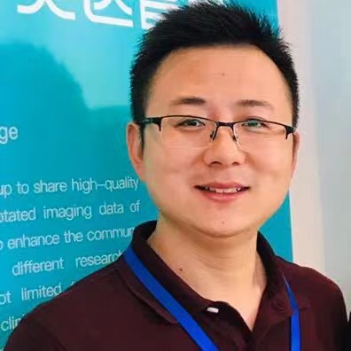

Jiong Zhang
Associate Professor (Tenured) Email: jiong.zhang(AT)ieee(DOT)org |
 |
|
|
|
• Z. Li, J. Zhang*, Y. Zeng, J. Lin, D. Zhang, J. Zhang, D. Xu, H. Kim, B. Liu, M. Liu*. [LINK] SurfGNN: A Robust Surface-Based Prediction Model with Interpretability for Coactivation Maps of Spatial and Cortical Features. Medical Image Analysis, Volume 107, Part A, 103793, 2026.
• T. Chen, D. Zhang, D. Chen, H. Fu, K. Jin, S. Wang, L.D. Cohen, Y. Zhao, Q. Yi, J. Zhang*.
[LINK] Neovascularization Segmentation via a Multilateral Interaction-Enhanced Graph Convolutional Network.
IEEE Transactions on Pattern Analysis and Machine Intelligence, vol. 47, no. 12, pp. 11107-11123, Dec. 2025.
• C. Lu, J. Zhang, D. Zhang, L. Mou, J. Yuan, K. Xia, Z. Guo, J. Zhang*. [LINK] Fine-Grained Hierarchical Progressive Modal-Aware Network for Brain Tumor Segmentation. IEEE Journal of Biomedical and Health Informatics, 2025, doi: 10.1109/JBHI.2025.3572301.
• J. Zhang; Q. Xie; L. Mou; D. Zhang; D. Chen; C. Shan, Y. Zhao, R. Su, M. Guo.
[LINK] DSCA: A Digital Subtraction Angiography Sequence Dataset and Spatio-Temporal Model for Cerebral Artery Segmentation.
IEEE Transactions on Medical Imaging, vol. 44, no. 6, pp. 2515-2527, 2025,
• C. Lu, Z. Guo, D. Zhang, L. Mou, J. Yuan, S. Ma, D. Chen, Y. Zhao, K. Xia*, J. Zhang*. [LINK] RSAPower: Random Style Augmentation Driven Structure Perception Network for Generalized Retinal OCT Fluid Segmentation. IEEE Transactions on Medical Imaging, vol. 44, no. 5, pp. 2353-2367, 2025.
• H. Mao, Y. Ma, D. Zhang, Y. Meng, S. Ma, Y. Qiao, H. Fu, C. Shan, D. Chen, Y. Zhao, J. Zhang*. [LINK] MR2-Net: Retinal OCTA Image Stitching via Multi-Scale Representation Learning and Dynamic Location Guidance. IEEE Journal of Biomedical and Health Informatics, 29(1), 482-494, 2025, doi: 10.1109/JBHI.2024.3467256.
• J. Zhang, C. Lu, R. Song, Y. Zheng, H. Hao, Y. Meng, Y. Zhao. [LINK] Self-Guided Adversarial Network for Domain Adaptive Retinal Layer Segmentation. IEEE Transactions on Instrumentation and Measurement, 2024, 73:3527110.
• X. Xu, P. Yang, H. Wang, Z. Xiao, G. Xing, X. Zhang, W. Wang, F. Xu, J. Zhang*, J. Lei*. [LINK] AV-casNet: Fully Automatic Arteriole-Venule Segmentation and Differentiation in OCT Angiography. IEEE Transactions on Medical Imaging, 42(2), 481-492, 2023, doi: 10.1109/TMI.2022.3214291.
• G. Xing, L. Chen, H. Wang, J. Zhang, D. Sun, F. Xu, J. Lei, and X. Xu. [LINK] Multi-scale pathological fluid segmentation in OCT with a novel curvature loss in convolutional neural network. IEEE Transactions on Medical Imaging2022, 41(6):1547-1559.
• H. Wang, Y. Zhou, J. Zhang, J. Lei, D. Sun, F. Xu, and X. Xu. " [LINK]Anomaly Segmentation in Retinal Images with Poisson-Blending Data Augmentation. Medical Image Analysis 81 (2022): 102534.
• H. Hao, C. Xu, Q. Yan, D. Zhang, J. Zhang*, Y. Liu*, Y. Zhao, Sparse-based Domain Adaptation Network for OCT-A Image Super-Resolution Reconstruction, IEEE Journal of Biomedical and Health Informatics, 2022, 26(9): 4402-4413.
• M. Awais, X. Long, B. Yin, S. F. Abbasi, S. Akbarzadeh, C. Lu, X. Wang, L. Wang, J. Zhang, J. Dudink, W. Chen, A hybrid DCNN-SVM model for classifying neonatal sleep and wake states based on facial expressions in video, IEEE Journal of Biomedical and Health Informatics 25 (5), 1441-1449, 2021
• A.H. Kashani, S. Asanad, J. Chen, M. Singer, J. Zhang, M. Sharifi, M. Khansari, F. Abdolahi, Y. Shi, A. Biffi, H. Chui, J. M Ringman, Past, present and future role of retinal imaging in neurodegenerative disease, Progress in Retinal and Eye Research, 100938, 2021
• J. Zhang, Y. Shi. ” [LINK]Personalized Matching and Analysis of Cortical Folding Patterns via Patch-Based Intrinsic Brain Mapping”. In MICCAI 2021, Lecture Notes in Computer Science, 12907, 710-720, 2021
• Y. Zhao, J. Zhang*, E. Pereira, Y. Zheng, P. Su, J. Xie, Y. Zhao, Y. Shi, H. Qi, J. Liu, Y. Liu. ” Automated Tortuosity Analysis of Nerve Fibers in Corneal Confocal Microscopy”. IEEE Transactions on Medical Imaging. (2020) vol. 39(9), pp. 2725-2737.
• J. Zhang, Y. Qiao, M. Khansari, J.K. Gahm, M. Sharifi, A.H. Kashani and Y. Shi. ”3D Shape Modeling and Analysis of Retinal Microvasculature in OCT-Angiography Images”. IEEE Transactions on Medical Imaging. vol. 39 (5), pp. 1335–1346, 2020
• M.S. Sarabi, M. Khansari, J. Zhang, S.K. Lenhoff, J.K. Gahm, Y. Qiao, A. H. Kashani, and Y. Shi. "3D Retinal Vessel Density Mapping With OCT-Angiography." IEEE Journal of Biomedical and Health Informatics. 24, no. 12 (2020): 3466-3479.
• Maz Khansari, Jiong Zhang, Yuchuan Qiao, Jin K. Gahm, Mona Sharifi, Amir H. Kashani and Yonggang Shi. “Automated Deformation-based Analysis of 3D Optical Coherence Tomography in Diabetic Retinopathy”. IEEE Transactions on Medical Imaging. vol. 39 (1), pp. 236–245, 2019
• J. Zhang, A.H. Kashani and Y. Shi. ”3D Surface-Based Geometric and Topological Quan- tification of Retinal Microvasculature in OCT-Angiography via Reeb Analysis”. In MICCAI 2019, , vol. 11764, pp. 57-65, Springer International Publishing, 2019
• Da Chen, Jiong Zhang*and Laurent Cohen. “Minimal Paths for Tubular Structure Segmentation with Coherence Penalty and Adaptive Anisotropy”. IEEE Transactions on Image Processing. vol. 28 (3), pp. 1271–1284, 2019
• Z. Li, F. Huang, J. Zhang et al. ”Multi-modal and multi-vendor retina image registration”. Biomedical Optics Express. vol. 9 (2), pp. 410–422, 2018
• Jiong Zhang, Erik Bekkers, Da Chen, Tos Berendschot, Jean Schouten, Josien Pluim, Yonggang Shi, Behdad Dashtbozorg and Bart ter Haar Romeny. ”Reconnection of interrupted curvilinear structures via cortically inspired completion for ophthalmologic images”. IEEE Transactions on Biomedical Engineering. vol. 65 (5), pp. 1151–1165, 2018
• B. Dashtbozorg, Jiong Zhang*, Fan Huang and Bart ter Haar Romeny. ”Retinal microaneurysms detection using local convergence index features”. IEEE Transactions on Image Processing. vol. 27 (7), pp. 3300–3315, 2018
• J. Zhang, Y. Chen, E. Bekkers, M. Wang, B. Dashtbozorg and B. ter Haar Romeny. ”Retinal vessel delineation using a brain-inspired wavelet transform and random forest”. Pattern Recognition. vol. 69 (2017), pp. 107–123, 2017
• S. Abbasi, J. Zhang, R. Duits and B. ter Haar Romeny. ”Retrieving challenging vessel connections in retinal images by line co-occurrence statistics”. Biological Cybernetics, vol. 111 (3), pp. 237–247, 2017
• Jiong Zhang, Behdad Dashtbozorg, Erik Bekkers, Josien Pluim, Remco Duits and Bart ter Haar Romeny. ”Robust retinal vessel segmentation via locally adaptive derivative frames in orientation scores”. IEEE Transactions on Medical Imaging. vol. 35 (12), pp. 2631–2644, 2016
• B. ter Haar Romeny, E. Bekkers, J. Zhang et al. ”Brain-Inspired Algorithms for Retinal Image Analysis”. Machine Vision and Applications, pp. 1-19, 2016. DOI: 10.1007/s00138-016-0771-9
• J. Zhang, R. Duits, G. Sanguinetti, and B. ter Haar Romeny. ”Numerical approaches for linear left-invariant diffusions on SE(2), their comparison to exact solutions, and their applications in retinal imaging”. Numerical Mathematics: Theory, Methods and Applications (NM-TMA), vol. 9 (1), pp. 1-50, 2015